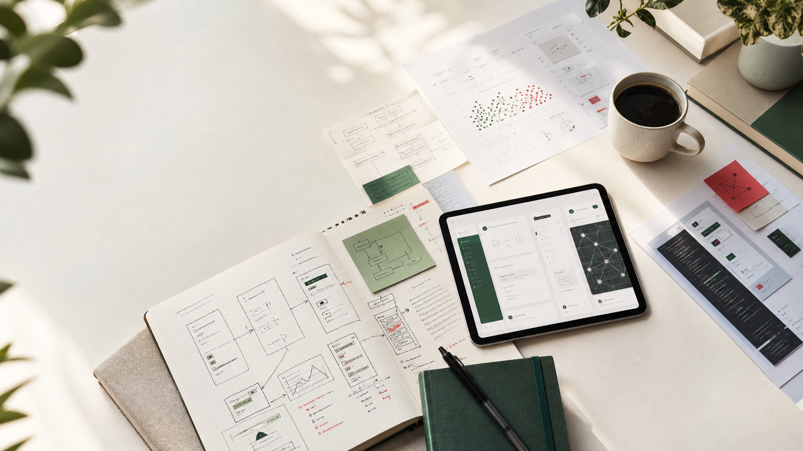

A personal site as a set of windows
每个人都拿着自己的取景框，看见世界的一部分。
这里会逐步打开我的个人简介、AI 产品实验、学习笔记与 AI coding 作品。窗不是高处的宣告， 而是一种姿态：保持好奇，承认局限，邀请别人从不同角度靠近。

Open a window
从不同的窗口进入我正在成为的人。
第一版首页先建立交互骨架。每个窗口后续都会变成一个独立页面：简介、项目、学习、方法、连接。
Manifesto
窗不是答案，是入口。
我希望这个网站不只是陈列成就，而是记录一个人如何把复杂世界一点点看清楚：先承认自己的视角有限， 再通过产品、研究、设计和对话，扩展那扇窗。
道也好，真理也罢，我们每个人只是在拿着自己的取景框看它。我的目标不是显得全知， 而是持续提出更好的问题，做出更诚实的作品。
Connect